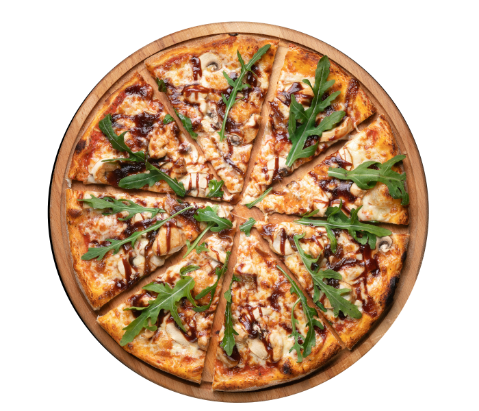
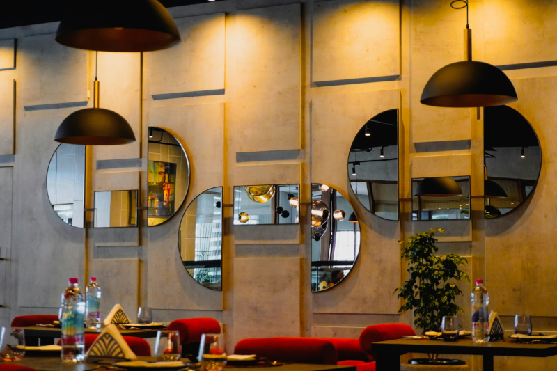
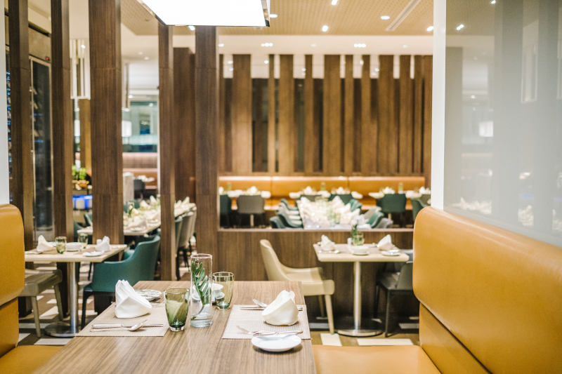

Forno a Legna
Cotta ad oltre 350°C per eliminare ogni traccia di umidità: la nostra pizza romana è un’esplosione di pura croccantezza ad ogni morso.
Ingredienti Locali
Farina di grano tenero Tipo 0. Pomodoro di filiera, fior di latte fresco e le migliori eccellenze dell'Agro Romano e del Lazio.
24/48h Lievitazione
Dal mattarello alla pala: stendiamo l'impasto fino a renderlo una sfoglia sottile e leggera, come insegna la vera tradizione romana.
Chi siamo
Sali a Bordo del gusto
Bordo nasce dal desiderio di portare in tavola l'autentica tradizione della pizza romana. Quello che era iniziato come un progetto mosso dalla pura passione, si è trasformato negli anni in una realtà consolidata e amata dai nostri clienti, che ritrovano nei nostri locali il gusto genuino delle origini. Per noi, qualità e tradizione viaggiano sullo stesso binario: è proprio questa filosofia che ha decretato il successo del nostro brand, permettendoci di aprire il nostro secondo locale a Roma. Il nostro obiettivo è offrire non solo una pizza, ma un’esperienza: un momento di convivialità che richiama i sapori, i profumi e l’atmosfera tipica delle pizzerie di una volta.
La nostra pizza
Bordo e Anima
Il bordo è la firma della nostra pizza, il dettaglio che ne dichiara la vera identità romana. Durante la cottura ad alta temperatura, la sfoglia dorata si asciuga alla perfezione, regalando quel margine sottile, fragrante e croccante che rende ogni morso inconfondibile. Ma il nostro bordo non è soltanto tradizione: è anche il segno distintivo di una cottura perfetta. In una vera pizza alla romana, è proprio il bordo a rivelare la maestria del mastro pizzaiolo: dorato, privo di umidità e incredibilmente friabile. È il perimetro croccante che custodisce tutti i sapori del condimento, regalando quella sonorità inconfondibile a ogni morso.

Le nostre sedi
Storie di quartiere

Testaccio
Dal 2006, la nostra prima casa. Un punto di riferimento nel cuore dello storico quartiere per chi cerca l'autentica pizza romana: sottile, croccante e ricca di tradizione.

San Giovanni
La nostra seconda sede, nata per portare la tipica 'scrocchiarella' in un nuovo quartiere a Roma. Il luogo ideale dove condividere con amici e famiglia il gusto di una volta.
Esperienza d’asporto
Durante il weekend o negli orari di maggiore affluenza, i tempi di attesa potrebbero variare. Per garantire un servizio più rapido ed efficiente, consigliamo di effettuare l’ordine con anticipo e di rispettare l’orario di ritiro concordato. Il ritiro avviene direttamente presso la nostra pizzeria all’orario indicato al momento dell’ordine. Per esigenze alimentari, allergie o intolleranze, vi invitiamo a segnalarle al momento dell’ordine: il nostro staff sarà lieto di assistervi nella scelta delle proposte più adatte. Alcuni ingredienti seguono la stagionalità e potrebbero pertanto non essere sempre disponibili.
Cosa dicono di noi
Le opinioni dei nostri clienti
Le nostre sedi a Roma
Testaccio
Via Marmorata, 160
Martedì - Venerdì: 19:00 - 23:30
Sabato e Domenica: 19:00 - 00:00
Lunedì: Chiuso
San Giovanni
Via Gallia, 103
Martedì - Venerdì: 19:00 - 23:30
Sabato e Domenica: 19:00 - 00:00
Lunedì: Chiuso